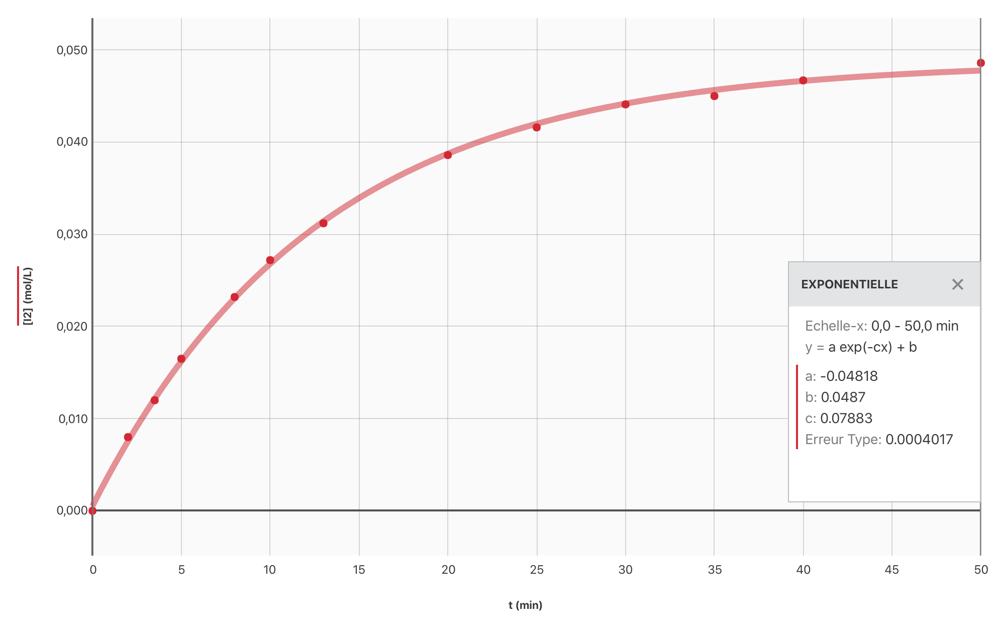
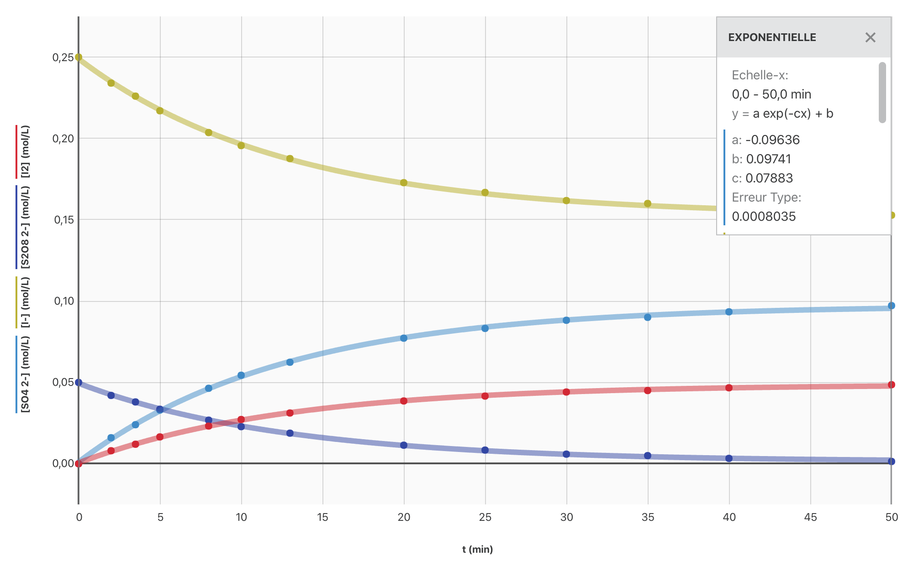
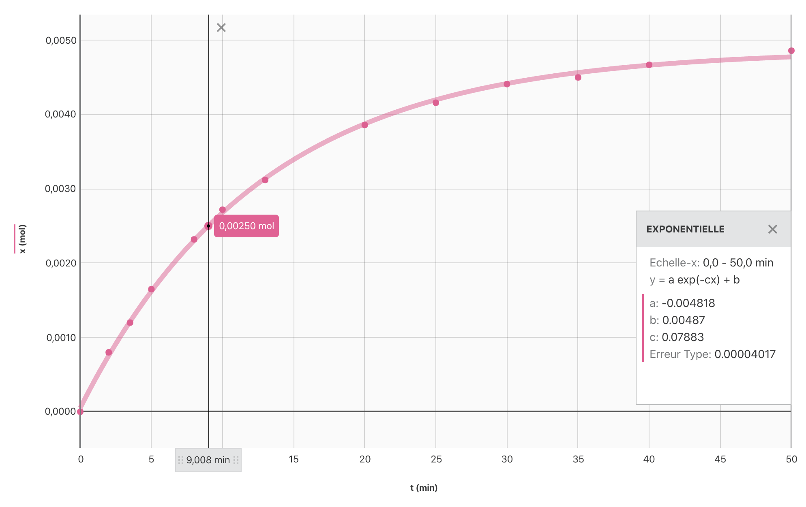
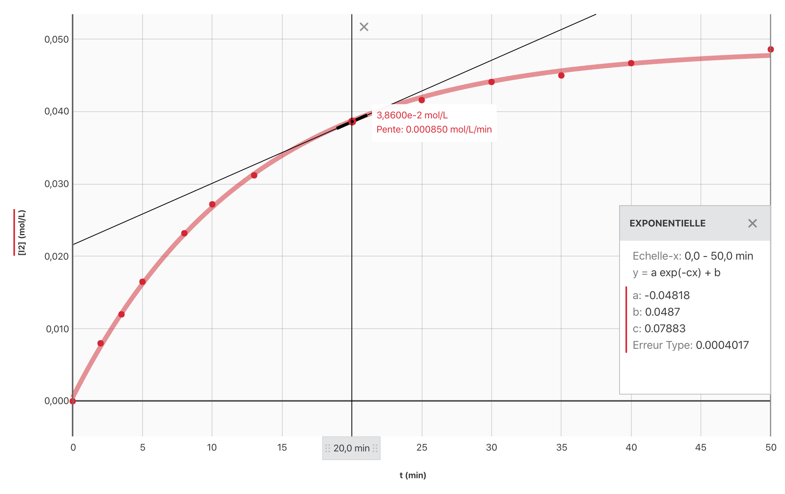
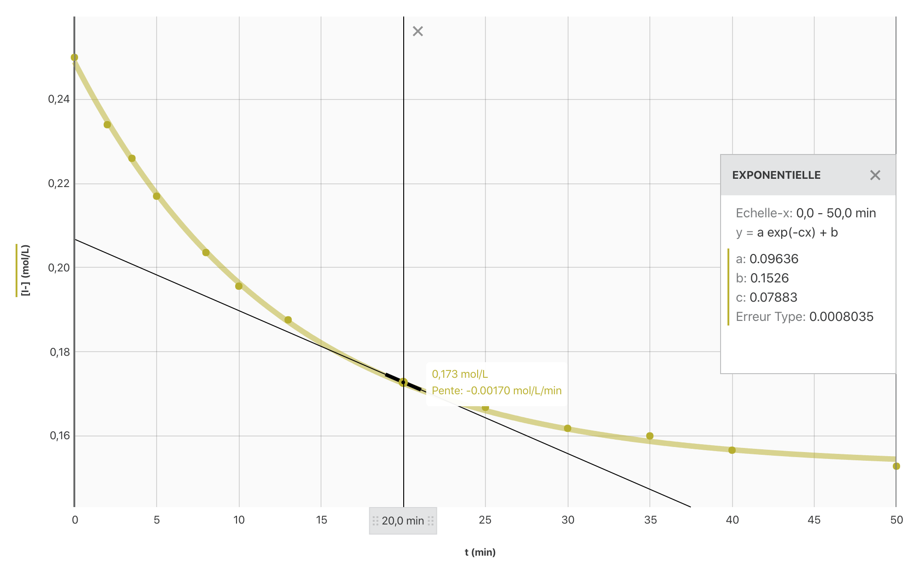

Comment suivre l’évolution au cours du temps d’un système formé d’ions iodure et péroxodisulfate
Expérience
Dans un bécher on verse $\pu{50 mL}$ d’une solution incolore de péroxodisulfate de potassium $(\ce{2 K^+(aq) + S2O8^{2-}(aq)})$, à $\pu{0,10 mol.L-1}$, puis $\pu{50 mL}$ d’une solution incolore d’iodure de potassium, $(\ce{K^+(aq) + I^-(aq)})$, à $\pu{0,50 mol.L-1}$. On agite pour homogénéiser le mélange et on déclenche un chronomètre.
Observation
On note que la solution se colore progressivement en jaune, couleur caractéristique de la présence des molécules $\ce{I2(aq)}$.
Interprétation
Les ions peroxodisulfate réagissent lentement avec les ions iodure selon l’équation $$ \ce{ 2 I^-(aq) + S2O8^{2-}(aq) -> I2(aq) + 2 SO4^{2-}(aq) } $$
On utilise un colorimètre et la loi de Beer-Lambert pour déterminer l’évolution de la concentration du diiode formé au cours du temps.
| t (min) | 0 | 2 | 3,5 | 5 | 8 | 10 | 13 | 20 | 25 | 30 | 35 | 40 | 50 | 60 |
|---|---|---|---|---|---|---|---|---|---|---|---|---|---|---|
| $[\ce{I2}]$ (mmol/L) | 0,0 | 8,0 | 12,0 | 16,5 | 23,2 | 27,2 | 31,2 | 38,6 | 41,6 | 44,1 | 45 | 46,7 | 48,6 | 49,1 |
- Établir, à l’aide du logiciel Graphical Analysis, le graphique $[\ce{I2}] = f(t)$.
Réponse
- Comment varie la vitesse de formation du diiode :
Réponse
Pour une durée $\Delta t$ donnée, on remarque que la concentration de diiode augmente de moins en moins vite lorsque le temps s’écoule. La vitesse de formation du diiode est donc de moins en moins grande. Au bout d’une certaine durée elle s’annule même (l’état final de la transformation est atteint).
- Expliquer cette évolution en utilisant un des facteurs cinétiques introduits dans les documents précédents.
Réponse
La concentration des réactifs est un facteur cinétique. Lorsque le système avance, cette concentration diminue, il est donc normal, sauf cas particulier, que la vitesse de formation du diiode diminue progressivement.
- Établir le tableau d’avancement de la transformation en fonction du temps.
Réponse
| État | Av. | $\ce{2 I^-(aq)}$ | $\ce{S2O8^{2-}(aq)}$ | $\ce{I2(aq)}$ | $\ce{2 SO4^{2-}(aq)}$ |
|---|---|---|---|---|---|
| Initial $t=0$ | 0 | $n_0(\ce{I^-})$ | $n_0(\ce{S2O8^{2-}})$ | $0$ | $0$ |
| Quelconque $t$ | $x(t)$ | $n_0(\ce{I^-}) - 2x(t)$ | $n_0(\ce{S2O8^{2-}}) - x(t)$ | $x(t)$ | $2 x(t)$ |
- La transformation étudiée est-elle totale ? Justifier la réponse.
Réponse
- Si la transformation chimique est totale au moins un des réactifs est limitant et $x_f = x_{\text{max}}$.
- Détermination de l’avancement maximal :
- $\ce{I^-}$ limitant :
$n_0(\ce{I^-}) - 2x_{\text{max}} = 0 \iff x_{\text{max}} = \dfrac{n_0(\ce{I^-})}{2}$.
A.N. $x_{\text{max}} = \dfrac{ \pu{50e-3 L} \times \pu{0,50 mol.L-1} }{2} = \pu{1,3e-2 mol}$. - $\ce{S2O8^{2-}}$ limitant :
$n_0(\ce{S2O8^{2-}}) - x_{\text{max}} = 0 \iff x_{\text{max}} = n_0(\ce{S2O8^{2-}})$.
A.N. $x_{\text{max}} = \pu{50e-3 L} \times \pu{0,10 mol.L-1} = \pu{5,0e-3 mol}$. - Finalement, $x_{\text{max}} = \pu{5,0e-3 mol}$ et $\ce{S2O8^{2-}}$ est le réactif limitant.
- $\ce{I^-}$ limitant :
$n_0(\ce{I^-}) - 2x_{\text{max}} = 0 \iff x_{\text{max}} = \dfrac{n_0(\ce{I^-})}{2}$.
- Sur le graphique, on constate que $[\ce{I2}]_\infty = \pu{5,0e-2 mol.L-1}$. Or $[\ce{I2}]_\infty = \dfrac{x_{\text{max}}}{V}$ avec $V$ le volume de la solution.
A.N. $[\ce{I2(aq)}]_\infty = \dfrac{\pu{5,0e-3 mol}}{\pu{50e-3 L} + \pu{50e-3 L}} = \pu{5,0e-2 mol.L-1}$.
La transformation chimique est bien totale.
- À partir du tableau d’avancement, écrire les expression des concentrations molaires de toutes les espèces chimiques en fonction de la concentration molaire en diiode.
Réponse
À chaque instant $t$, $x(t) = V \cdot [\ce{I2}] (t)$, donc :
- $[ \ce{S2O8^{2-}} ] (t) = [\ce{S2O8^{2-}}] _0 - \dfrac{x(t)}{V} = [\ce{S2O8^{2-}}]_0 - \dfrac{[\ce{I2}] \cdot V}{V} $
$$ \boxed{[\ce{S2O8^{2-}}] (t) = [\ce{S2O8^{2-}}] _0 - [\ce{I2}] (t) } $$
- $[\ce{I^-}] (t) = [\ce{I^-}] _0 - \dfrac{2 x(t)}{V} = [\ce{I^-}]_0 - \dfrac{2 [\ce{I2}] \cdot V}{V}$
$$ \boxed{[\ce{I^-}] (t) = [\ce{I^-}] _0 - 2 [\ce{I2}] (t)} $$
- $[\ce{SO4^{2-}}] (t) = \dfrac{2 x(t)}{V} = \dfrac{2 [\ce{I2}] \cdot V}{V}$
$$ \boxed{[\ce{SO4^{2-}}] (t) = 2 [\ce{I2}] (t)} $$
- Ajouter les différentes fonctions sur le graphique de la question 1.
Réponse
Comment évaluer la durée nécessaire à l’achèvement de la transformation chimique étudiée
Temps de demi-réaction
Le temps de demi-réaction, noté $t_{1/2}$, d’une réaction chimique est la durée nécessaire pour que l’avancement de la réaction parvienne à la moitié de sa valeur finale.
$$ x (t_{1/2}) = \dfrac{x_f}{2} $$
- Si la transformation chimique est totale,
$$ x (t_{1/2}) = \dfrac{x_{max}}{2} $$
-
Si la transformation est totale, le temps de demi-réaction est aussi la durée au bout de laquelle la moitié du réactif limitant a été consommée.
-
Le temps de demi-réaction est la durée au bout de laquelle la moitié de la quantité de matière finale de produit a été produite.
Le temps de demi-réaction est, en terminale, une valeur essentiellement expérimentale
En classe de terminale, il n’est pas question de résoudre les équations différentielles qui traduisent l’évolution au cours du temps des concentrations. On détermine donc le temps de demi-réaction à partir de l’expérience.
Détermination pratique du temps de demi-réaction
- Tracer la courbe $x = f(t)$.
- Déterminer la valeur de l’avancement final.
- Rechercher sur le graphique la date pour laquelle $x = \dfrac{x_f}{2}$ ; c’est $t_{1/2}$.
- Construire, à l’aide du logiciel Graphical Analysis, la courbe $x = f(t)$ et en déduire la valeur du demi-temps de réaction.
Réponse
 > $t_{1/2} = \pu{9 min}$- Démontrer que l’on peut, en fait, déterminer la valeur de $t_{1/2}$ à partir de la courbe $[\ce{I2}] = g(t)$ ou des courbes $[\ce{SO4^{2-}}] = h(t)$, $[\ce{I^-}] = m(t)$, etc.
Réponse
À partir du tableau d’avancement on a déterminé que :
- $[\ce{I2}] (t) = \dfrac{x(t)}{V}$, donc $[\ce{I2}]_f = \dfrac{x_f}{V}$. On a donc $[\ce{I2}] (t_{1/2}) = \dfrac{x(t_{1/2})}{V} = \dfrac{x_f}{2V}$. Comme $x_f = V [\ce{I2}]_f $, $[\ce{I2}] (t_{1/2}) = \dfrac{V [\ce{I2}]_f}{2V} = \dfrac{ [\ce{I2}] _f }{2}$.
$$ \boxed{[\ce{I2}] (t_{1/2}) = \dfrac{ [\ce{I2}] _f }{2} }$$
- $[\ce{SO4^{2-}}] (t) = \dfrac{2 x(t)}{V}$, donc $[\ce{SO4^{2-}}]_f = \dfrac{2 x_f}{V}$. On a donc $[\ce{SO4^{2-}}] (t_{1/2}) = \dfrac{ 2 x(t_{1/2})}{V} = \dfrac{2 x_f}{2V} = \dfrac{x_f}{V}$. Comme $x_f = \dfrac{V [\ce{SO4^{2-}}]_f}{2}$, $[\ce{SO4^{2-}}] (t_{1/2}) = \dfrac{V [\ce{SO4^{2-}}]_f}{2V} = \dfrac{ [\ce{SO4^{2-}}] _f }{2}$.
$$ \boxed{[\ce{SO4^{2-}}] (t_{1/2}) = \dfrac{ [\ce{SO4^{2-}}] _f }{2}} $$
- $[\ce{I^-}] (t) = [\ce{I^-}]_0 - \dfrac{2 x(t)}{V}$, donc $[\ce{I^-}]_f = [\ce{I^-}]_0 - \dfrac{2 x_f}{V}$. On a donc $[\ce{I^-}] (t_{1/2}) = [\ce{I^-}]_0 - \dfrac{ 2 x(t_{1/2})}{V} = [\ce{I^-}]_0 - \dfrac{2 x_f}{2V} = [\ce{I^-}]_0 - \dfrac{x_f}{V}$. Comme $x_f = \dfrac{V }{2}\, ([\ce{I^-}]_0 - V [\ce{I^-}]_f) $, $ [\ce{I^-}] (t_{1/2}) = [\ce{I^-}]_0 - \dfrac{V }{2}\, ([\ce{I^-}]_0 - [\ce{I^-}]_f) = \dfrac{1}{2}\, ([\ce{I^-}]_0 + [\ce{I^-}]_f)$.
$$ \boxed{[\ce{I^-}] (t_{1/2}) = \dfrac{1}{2}\, ([\ce{I^-}]_0 + [\ce{I^-}]_f) }$$
- De même, $$ \boxed{[\ce{S2O8^{2-}}] (t_{1/2}) = \dfrac{1}{2}\, ([\ce{S2O8^{2-}}]_0 + [\ce{S2O8^{2-}}]_f) = \dfrac{[\ce{S2O8^{2-}}]_0}{2} }$$ puisqu’il s’agit du réactif limitant.
Intérêt de $t_{1/2}$
Vitesses (volumiques) d’un formation d’un produit et de disparition d’un réactif
Vitesse (volumique) de formation d’un produit
Vitesse volumique de disparition d’un réactif
Quelle est l’unité d’une vitesse volumique ?
- À l’aide d’une analyse dimensionnelle, déterminer l’unité de la vitesse volumique.
Réponse
$[v] = \dfrac{1}{L^3} \times \dfrac{n}{T}$ où $n$ est une quantité de matière. Comme $\dfrac{n}{V} = [C]$ la vitesse volumique est donc une concentration sur un temps et s’exprime en mole par mètre-cube par seconde : $\pu{mol.m-3.s-1}$. En pratique, on utilise mole par litre par seconde : $\pu{mol.L-1.s-1}$.
Comment déterminer expérimentalement la valeur de la vitesse de réaction
Pour déterminer une vitesse volumique $v$ à une date $t_1$, à partir des valeurs de la concentration d’un produit (ou d’un réactif) $[X]$ (ou $[Y]$) obtenues lors d’une expérience :
- On modélise le « nuage de points » ;
- On mesure la pente de la tangente à la courbe obtenue lors de l’étape précédente au point d’abscisse $t_1$.
- Écrire l’expression de la vitesse volumique de formation de $[\ce{I_2}]$ et et déterminer ses valeurs aux dates $\pu{5 min}$, $\pu{10 min}$ et $\pu{20 min}$.
Réponse
$$ \boxed{v_f (\ce{I_2})(t) = \dfrac{\mathrm{d} [\ce{I_2}]}{\mathrm{dt}}}$$
- Écrire l’expression de la vitesse volumique de disparition de $[\ce{I^-}]$ et déterminer ses valeurs aux dates $\pu{5 min}$, $\pu{10 min}$ et $\pu{20 min}$.
Réponse
$$ v_d (\ce{I^-})(t) = - \dfrac{1}{2} \dfrac{\mathrm{d} [\ce{I^-}]}{\mathrm{dt}}$$
